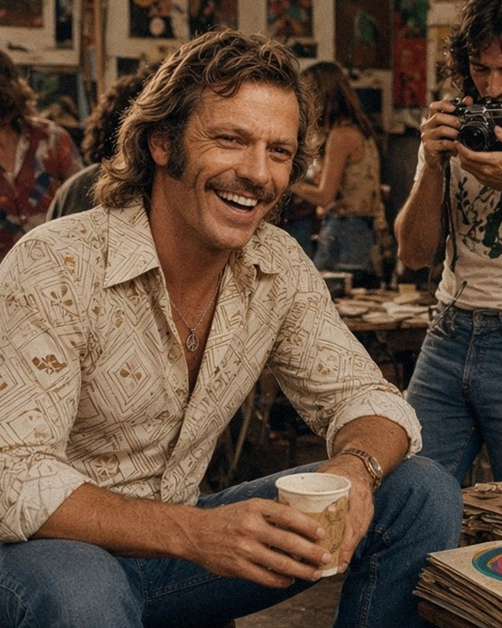
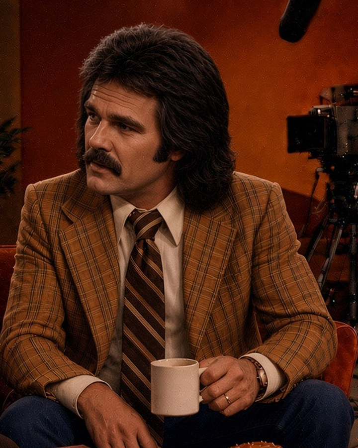
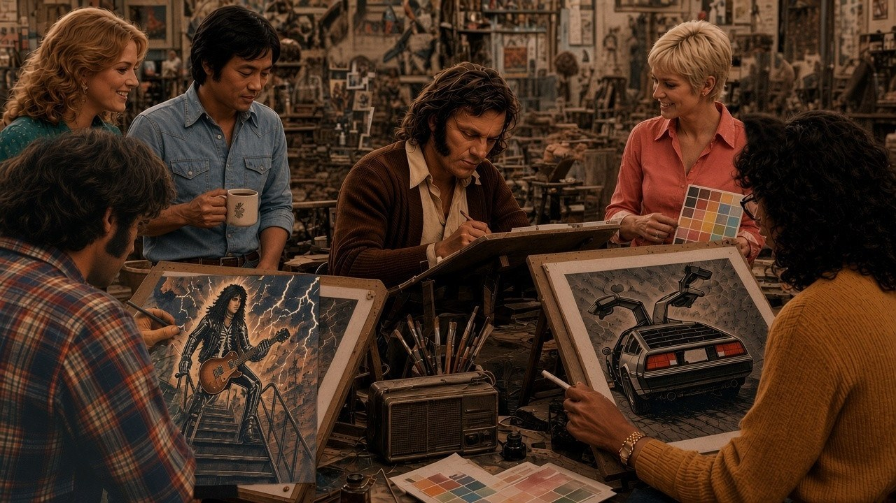
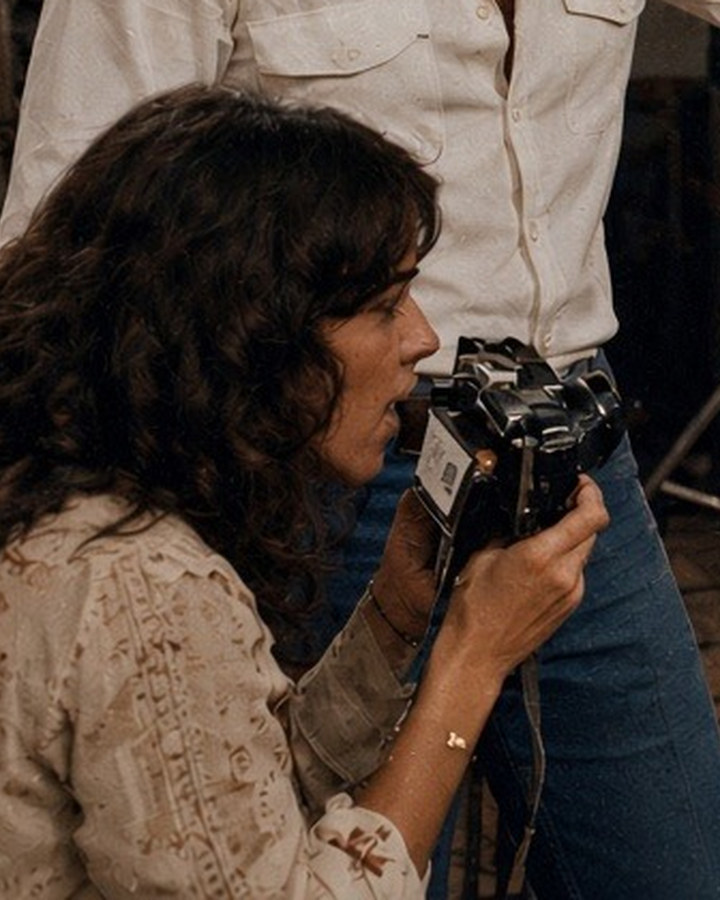
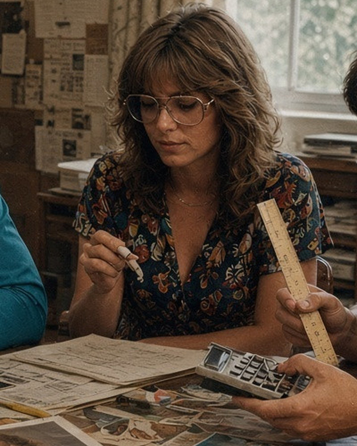

The loft, West 26th Street
The Team
A small staff, a large ashtray, and a creative director who will move a plant two inches and call it a philosophy.

Gaute
The Ad Man · Creative Director
Genius of the whole operation. He does not use another name on the floor. The Ace stories are his masterpiece. The advertisements, he will tell you, pay the rent, and the rent is a kind of art. He will move a plant two inches and call it a philosophy.

Chuck Daley
Television Spokesman
Host of Rise & Shine with Chuck Daley. Owns a tie you can see from a passing car. Eats the doughnut off-camera, which the Ad Man calls honest programming.

The art department
Ace Stories only
Ellis Brennan, senior inker, has ink under his nails and a union opinion about lunch. Sonia Rosario colours the next issue and will not be drawn on anything else. Studio policy, and also the lawyers’. The Ad Man, in the cardigan, “just wanted to fix a shadow.” They illustrate only the Ace stories.

Ruthie Kowalski
Staff Photographer
Works the floor. Has been asked, more than once, to be in the picture as well as take it. She says this is “not how it usually works.”

Connie Voss
Picture Editor
Has a ruler and a look. The paste-up is square when she says it is square. Wood veneer, as the Ad Man puts it, is a promise. Connie will allow the promise once the margins are even.
Debbie Fane keeps the only key to the supply closet and is not in today. Fine print: these are invented period-style roles. The photographs are from the studio’s own behind-the-scenes record. We show no likeness of a real celebrity.